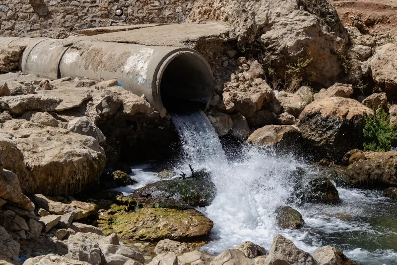
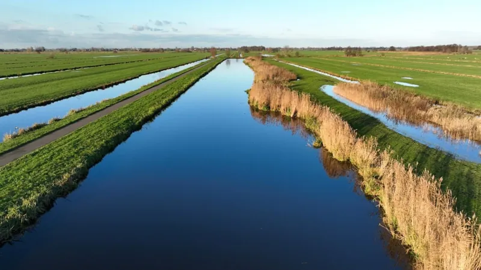

AquaWare Watervergunningchecker Beschikbaar als dienst
Watervergunningen sneller uitlezen. Gerichter voorbereiden op de KRW.
U levert uw lozingsvergunningen aan. AquaWare leest ze uit en levert een overzicht van voorschriften, stoffen en lozingseisen, met verwijzing naar de bron in het document en signalering van mogelijke aandachtspunten voor de KRW-beoordeling. Geen nieuwe software voor uw organisatie: u ontvangt het resultaat.
Voorbeeld van de oplevering
Vergunningoverzicht · Industriële lozing A
WVV-2009-0142 · watervergunning 2009, wijzigingsbesluiten 2014 en 2019
- 42voorschriften geïdentificeerd
- 8stoffen en parameters
- 6mogelijke aandachtspunten
- 3ontbrekende gegevens
Lozingseisen 3 van 8
| Parameter | Waarde | Bron p./vs. | Status |
|---|---|---|---|
| CZV | 150 mg/l | p.7 · vs. 3.2.1 | Gecontroleerd |
| Stikstof totaal | 10 mg/l | p.7 · vs. 3.2.1 | Gecontroleerd |
| Zink | 0,5 mg/l | p.7 · vs. 3.2.1 | Gecontroleerd |
Aandachtspunten voor de KRW-beoordeling
- Relevante stoffen beoordelenOnderzoeken of alle voor de lozing relevante stoffen voldoende in beeld zijn.p.7 · vs. 3.2.1
- Bemonsteringsfrequentie beoordelenVergunning schrijft jaarlijkse bemonstering voor. Beoordelen of deze frequentie nog passend is.p.9 · vs. 3.4
- KRW-toetsing voorbereidenGegevens over ontvangend water en relevante waterkwaliteitsnormen zijn nodig.ontbreekt in dossier
Wat u ontvangt
Van tientallen pagina's vergunningtekst naar gericht inzicht in wat nodig is voor vergunningactualisatie en KRW-beoordeling.
- Overzicht per vergunning Voorschriften, stoffen en lozingseisen met bronverwijzing.
- Aandachtspunten voor de KRW-beoordeling Lozingen en voorschriften die mogelijk nader beoordeeld moeten worden.
- Prioritering Welke vergunningen als eerste aandacht verdienen en welke gegevens ontbreken.
De beoordeling zelf blijft bij uw deskundige; wij leveren de onderbouwing.
Vraag een analyse aan
Hoe werkt het?
Drie stappen van vergunning naar inzicht.
-
1
U levert de vergunningen aan
Bestaande watervergunningen en wijzigingsbesluiten, als PDF.
-
2
AquaWare leest uit en analyseert
Voorschriften, stoffen en lozingseisen worden gestructureerd verzameld en door een specialist gecontroleerd.
-
3
U ontvangt het overzicht
Per vergunning de aandachtspunten en ontbrekende gegevens, met verwijzing naar de bron.
Contact
Uw watervergunningen laten uitlezen?
Stuur ons een selectie van vergunningen en we laten zien wat het overzicht oplevert.

Kennismaken
Waar zit in uw werkgebied de grootste waterkwaliteitswinst?
Vertel ons waar u tegenaan loopt: een stof die u niet kunt verklaren, een gebied met meer bedrijven dan u kunt overzien, of een samenwerking die nog niet van de grond komt. In een eerste gesprek luisteren we vooral, en brengen we samen uw werkwijze, uw gegevens en uw opgave in beeld. Daarna zeggen we eerlijk of en hoe AquaWare kan helpen — en wat de eerste stap is.